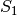

Integrate-and-Fire Neurons¶
Encoding with Integrate-and-Fire (IAF) Neurons¶
IAF Encoding (iaf_encode.m) [2] [11]:
Encodes a time-varying signal using an IAF neuron. Leaky and ideal neuron models are supported. In addition, IAF neuron with random (Gaussian) thresholds is also supported. A signal can be encoded by a single IAF encoder (Single-Input Single-Output Encoding), as shown in the figure below, or it can be encoded by a population of IAF neurons (Single-Input Multi-Output Encoding).

ON-OFF IAF Encoding (iaf_encode_ideal_on_off.m) [12]:
Encodes a time-varying signal using an ON-OFF IAF neuron pair. Only ideal IAF neuron models are supported.

Decoding for Signal Encoded with Single-Input Single-Output IAF neuron¶
Decoding (iaf_decode.m) [1]:
Reconstructs a bandlimited signal encoded by an IAF neuron using sinc kernels.

Decoding using Fast Approximation Method (iaf_decode_fast.m) [4]:
Reconstructs a bandlimited signal encoded by an IAF neuron using a fast approximation method.

Decoding using Spline Interpolation (consistent_decoding_LIF.m) [12]:
Reconstructs a finite-energy signal encoded by an Leaky-Integrate-and-Fire (LIF) neuron. It uses spline interpolation algorithm.

Decoding using Smoothing Spline (LIF_decode_S1.m, LIF_decode_S2.m) [11]:
Reconstructs a signal in Sobolev space  or encoded by a LIF neuron using smoothing splines. Signals encoded by a LIF with random threshold should be decoded using this function.

Decoding for Signal Encoded with Single-Input Multiple-Output IAF neurons¶
Decoding for ON-OFF IAF (consistent_decoding_IF_ONOFF.m) [12]:
Reconstructs a finite energy signal encoded by ON-OFF IAF neuron pair. The reconstruction is performed using spline interpolation method.

Population Decoding (iaf_decode_pop.m) [7]:
Reconstructs a bandlimited signal encoded by an ensemble of IAF neurons using sinc kernels.

Population Decoding using Smoothing Splines (LIF_pop_decode_S1.m, LIF_pop_decode_S2.m) [11]:
Reconstructs a signal in Sobolev Space or encoded by a population of LIF neurons. The reconstruction uses smoothing spline method in the RKHS. Signals encoded by population of LIF with random threshold should be decoded using this function.

Decoding for Signals Encoded with Multiple-Input Multiple-Output IAF neurons¶
Population Decoding using Spline Interpolation (consistent_decoding_IF_MIMO.m) [12]:
Reconstructs multiple finite energy signals encoded by a population of ideal IAF neurons in Multiple-Input Multiple Output setting. The reconstruction uses spline interpolation method.